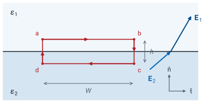
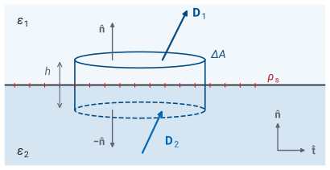
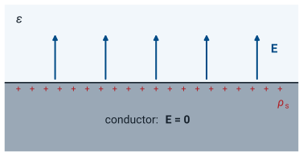

L24 - Electric Boundary Conditions#
Electric Boundary Conditions
Today we find what the electric field must do where one material meets another.
Lesson 24 · Module 2: Electrostatics · Maj Ellis · Dr. Neil Rogers
Learning Objectives
- I can apply the electric field boundary conditions to calculate electric fields on both sides of a material boundary.
Every field we have computed so far lived in one uniform material. Real devices are built from several: a capacitor holds a dielectric between two metal plates, a coaxial cable wraps polyethylene around copper, and a circuit board stacks fiberglass between copper planes. At each surface where two materials meet, the field changes abruptly, but not arbitrarily. Today we apply the two laws of electrostatics to a thin loop and a thin box that straddle the boundary, and they hand us two boundary conditions: one on the component of the field along the boundary, and one on the component across it. With those two conditions we can find the field on one side from the field on the other, predict how field lines bend at a dielectric, and find the charge on the surface of a conductor from the field next to it.
Where We Were
The two laws of electrostatics, in integral form:
Lesson 20 introduced Gauss’s law: the flux of the electric flux density \(\mathbf{D}\) out of any closed surface \(S\) equals the free charge enclosed by it. Lesson 22 showed that the static electric field is the gradient of a potential, \(\mathbf{E} = -\nabla V\), so its integral around any closed path \(C\) is zero: walking around a loop and returning to the start, the potential returns to where it began. This is Kirchhoff’s voltage law in field form. Inside a material, the two fields are tied together by the permittivity, \(\mathbf{D} = \epsilon\mathbf{E}\). Today we apply both integral laws to surfaces and paths so small that they see only the boundary, and nothing else.
The Tangential Field: A Thin Loop

Shrink the height: \(h \to 0\).
Two materials with permittivities \(\epsilon_1\) and \(\epsilon_2\) meet at a flat boundary. We define a unit normal \(\hat{\mathbf{n}}\) that points from region 2 into region 1, and a unit tangent \(\hat{\mathbf{t}}\) along the boundary. Any field splits into a tangential component along \(\hat{\mathbf{t}}\) and a normal component along \(\hat{\mathbf{n}}\): in region 1 these are \(E_{t1}\) and \(E_{n1}\), and in region 2, \(E_{t2}\) and \(E_{n2}\).
To relate the tangential components, we take the rectangular path \(a \to b \to c \to d \to a\), with its long sides of length \(W\) parallel to the boundary, one in each region, and its short sides of height \(h\) crossing it. We make \(W\) small enough that the field is uniform along each long side, and then shrink \(h\) toward zero, so that the long sides sit just above and just below the boundary.
Evaluating the Loop
We split the closed path into its four sides. Along side \(ab\) the path runs in the \(+\hat{\mathbf{t}}\) direction through region 1, so \(d\mathbf{l} = \hat{\mathbf{t}}\ dl\), and the dot product picks out the tangential component \(E_{t1}\), which is constant along the short side; the integral is \(E_{t1}\) times the length \(W\). Along side \(cd\) the path runs back in the \(-\hat{\mathbf{t}}\) direction through region 2, which gives \(-E_{t2} W\). The two short sides each have length \(h\), and the field on them is finite, so their integrals are at most the field times \(h\) and vanish as \(h \to 0\). What is left must still sum to zero, because the loop law holds for every closed path.
The Tangential Condition
Tangential \(\mathbf{E}\) is continuous across any boundary.
Tangential \(\mathbf{D}\) is not: \(\frac{D_{t1}}{\epsilon_1} = \frac{D_{t2}}{\epsilon_2}\).
Dividing the last line by \(W\) gives the tangential boundary condition: the component of \(\mathbf{E}\) along the boundary is the same on both sides. The cross product with the normal is the same statement written for any orientation, since \(\hat{\mathbf{n}}\times\mathbf{E}\) keeps only the tangential part of \(\mathbf{E}\). Nothing in the derivation depended on the materials or on any charge sitting on the boundary, so the condition holds at every boundary in electrostatics. The flux density does not share it. Because \(\mathbf{D} = \epsilon\mathbf{E}\) on each side, the tangential components of \(\mathbf{D}\) differ by the ratio of the permittivities.
The Normal Field: A Thin Pillbox

Shrink the height: \(h \to 0\).
To relate the normal components, we apply Gauss’s law to a closed surface that straddles the boundary: a short cylinder, or pillbox, whose two flat faces of area \(\Delta A\) lie parallel to the boundary, one in each region. The boundary may carry a surface charge density \(\rho_s\), in C/m². We make \(\Delta A\) small enough that \(\mathbf{D}\) is uniform over each face and \(\rho_s\) is uniform over the patch of boundary inside the box, and then shrink the height \(h\) toward zero.
Evaluating the Pillbox
The closed surface has three parts. On the top face, in region 1, the outward normal is \(\hat{\mathbf{n}}\), so \(d\mathbf{s} = \hat{\mathbf{n}}\ ds\) and the flux is the normal component \(D_{n1}\) times the area. On the bottom face, in region 2, the outward normal points the other way, \(-\hat{\mathbf{n}}\), so the flux is \(-D_{n2}\ \Delta A\). The curved side has area \(2\pi r h\) for a pillbox of radius \(r\), which vanishes as \(h \to 0\), and so does its flux. The charge inside is the surface charge on the enclosed patch, \(\rho_s\ \Delta A\). Any volume charge density \(\rho_v\) near the boundary contributes \(\rho_v\ \Delta A\ h\), which also vanishes as \(h \to 0\); only a true surface charge survives the limit.
The Normal Condition
Between two dielectrics, \(\rho_s = 0\), so \(D_{n1} = D_{n2}\).
Then \(\epsilon_1 E_{n1} = \epsilon_2 E_{n2}\): normal \(\mathbf{E}\) jumps.
Collecting the terms and dividing by \(\Delta A\) gives the normal boundary condition: the normal component of \(\mathbf{D}\) jumps by the surface charge density. The sign matters: \(\hat{\mathbf{n}}\) points from region 2 into region 1, and the jump is region 1 minus region 2. At a boundary between two ordinary dielectrics there is no free charge to sit on the surface, so \(\rho_s = 0\) and the normal component of \(\mathbf{D}\) is continuous. Writing \(\mathbf{D} = \epsilon\mathbf{E}\) on each side shows that the normal component of \(\mathbf{E}\) is then discontinuous: it is smaller in the material with the larger permittivity, by the ratio \(\epsilon_1/\epsilon_2\).
Both Conditions
Tangential |
Normal |
|
|---|---|---|
\(\mathbf{E}\) |
\(E_{t1} = E_{t2}\) |
\(\epsilon_1 E_{n1} - \epsilon_2 E_{n2} = \rho_s\) |
\(\mathbf{D}\) |
\(\frac{D_{t1}}{\epsilon_1} = \frac{D_{t2}}{\epsilon_2}\) |
\(D_{n1} - D_{n2} = \rho_s\) |
The table collects the two conditions and their versions for the other field. Each row says the same thing twice, once for each field, because \(\mathbf{D} = \epsilon\mathbf{E}\). The tangential condition came from the loop law and the normal condition from Gauss’s law, so between them they carry all of electrostatics to the boundary. Given the field on one side, they fix both components of the field on the other side, which is all there is: a field has a tangential part and a normal part, and we now know how each crosses.
How the Field Bends
Measure each angle from the normal, with \(\rho_s = 0\):
The field leans further from the normal in the larger \(\epsilon\).
A field line that crosses the boundary changes direction. Let \(\theta_1\) and \(\theta_2\) be the angles between the field and the normal on each side, so the tangent of each angle is the tangential component over the normal component. Dividing one by the other separates the two conditions. The tangential components cancel, because they are equal. The normal components leave the ratio \(E_{n2}/E_{n1}\), which the normal condition sets to \(\epsilon_1/\epsilon_2\) when there is no surface charge. So the tangents of the angles stand in the ratio of the permittivities. In the material with the larger permittivity the normal component is smaller while the tangential component is unchanged, so the field there tilts toward the boundary.
The Field at a Dielectric Boundary
The widget draws the field crossing from region 1, above, into region 2, below, with no surface charge on the boundary. Set the two relative permittivities and the angle \(\theta_1\) from the normal; the bold arrows are \(\mathbf{E}_1\) and \(\mathbf{E}_2\) at one point, drawn to scale, and the dashed lines are their tangential and normal components. Start at the default, free space over \(\epsilon_r = 4\): the tangential components match, the normal component shrinks by four, and the field in region 2 leans out to \(66.6^\circ\). Turn on Show D and the normal components match instead. Set the two permittivities equal and the field passes straight through. Then put the larger permittivity on top and watch the field bend toward the normal as it enters region 2.
Worked Example: Free Space and a Dielectric
Region 1, \(y < 0\): free space. Region 2, \(y > 0\): \(\epsilon_r = 2\), with \(\mathbf{E}_2 = \hat{\mathbf{x}}3 + \hat{\mathbf{y}}4 + \hat{\mathbf{z}}5\) V/m.
Worked example — the field on the other side of a boundary
The plane \(y = 0\) separates free space, region 1 at \(y < 0\), from a dielectric with \(\epsilon_r = 2\), region 2 at \(y > 0\). In the dielectric, next to the boundary, \(\mathbf{E}_2 = \hat{\mathbf{x}}3 + \hat{\mathbf{y}}4 + \hat{\mathbf{z}}5\) V/m. There is no free charge on the boundary. Find \(\mathbf{E}_1\) and the angle each field makes with the normal.
The normal to the boundary is along \(\hat{\mathbf{y}}\), so the \(y\) component of each field is its normal component, and the \(x\) and \(z\) components together are its tangential component. The tangential condition copies the tangential components across: \(E_{1x} = 3\) and \(E_{1z} = 5\) V/m. The normal condition with \(\rho_s = 0\) equates the normal components of \(\mathbf{D}\):
so \(\mathbf{E}_1 = \hat{\mathbf{x}}3 + \hat{\mathbf{y}}8 + \hat{\mathbf{z}}5\) V/m. The tangential component has magnitude \(\sqrt{3^2 + 5^2} = \sqrt{34} = 5.83\) V/m on both sides, so the angles from the normal are
As a check, \(\tan 36.1^\circ / \tan 55.5^\circ = 0.729/1.458 = 0.500 = \epsilon_1/\epsilon_2\). The field leans further from the normal in the dielectric, the region with the larger permittivity.
Conductors

In electrostatics, \(\mathbf{E} = 0\) inside a conductor.
Its charge sits on the surface: \(\rho_v = \nabla\cdot\mathbf{D} = 0\) inside.
A conductor is full of charges free to move. If any electric field existed inside it, that field would push those charges, and they would keep moving until their own field cancelled it. The static state, the one electrostatics describes, is reached when the field inside is zero everywhere. Then \(\mathbf{D} = 0\) inside too, and the differential form of Gauss’s law from Lesson 21 says the volume charge density there is \(\nabla\cdot\mathbf{D} = 0\). Any charge a conductor carries must therefore sit on its surface, as the surface charge density \(\rho_s\).
The Field at a Conductor’s Surface
Region 2 is the conductor, so \(\mathbf{E}_2 = \mathbf{D}_2 = 0\):
The field leaves a conductor along the normal.
We apply both boundary conditions with the conductor as region 2. The tangential condition says the tangential field just outside equals the tangential field inside, which is zero. The normal condition, with \(\mathbf{D}_2 = 0\), says the normal flux density just outside equals the surface charge density. So the field next to a conductor points straight away from the surface, and its strength gives the charge underneath it, or the reverse. Positive charge sends the field outward; negative charge, inward. A field of \(100\ \text{kV/m}\) next to a conductor in air means the surface carries \(\rho_s = \epsilon_0 E = 8.854 \times 10^{-12} \times 10^5 = 0.885\ \mu\text{C/m}^2\). This one result is how Lesson 25 finds the field inside a capacitor.
Summary
Symbol / idea |
What it is |
Number to remember |
|---|---|---|
\(\hat{\mathbf{n}}\) |
Unit normal, from region 2 into region 1 |
|
Tangential condition |
From \(\oint \mathbf{E}\cdot d\mathbf{l} = 0\) on a thin loop |
\(E_{t1} = E_{t2}\) |
Normal condition |
From Gauss’s law on a thin pillbox |
\(D_{n1} - D_{n2} = \rho_s\) |
Two dielectrics |
No free surface charge |
\(\epsilon_1 E_{n1} = \epsilon_2 E_{n2}\) |
Bending |
Angle from the normal |
\(\frac{\tan\theta_1}{\tan\theta_2} = \frac{\epsilon_1}{\epsilon_2}\) |
Conductor |
No field inside; charge on the surface |
\(\mathbf{E} = \hat{\mathbf{n}}\ \rho_s/\epsilon\) outside |
Practice
Where This Is Going
Lesson 25: capacitance. The conductor condition gives the field from the charge, and the field gives the voltage.
We derive the coaxial \(C'\) that Lesson 6 quoted.
Today’s two conditions finish the toolkit of electrostatics: Coulomb’s law and Gauss’s law find the field from charges, the potential turns the field into voltage, and the boundary conditions carry the field across materials and up to conductors. Lesson 25 puts the pieces together to find the capacitance of a pair of conductors from their geometry and the material between them. It works the parallel-plate capacitor, then the coaxial line, which gives the per-unit-length capacitance \(C'\) that Lesson 6 used without derivation, and finally a capacitor with two dielectric layers, where the normal condition decides which layer breaks down first.
Before Lesson 25, read sections 5.23 and 5.24 of Ellingson, Electromagnetics, Vol. 1.